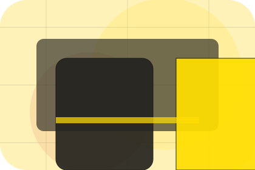
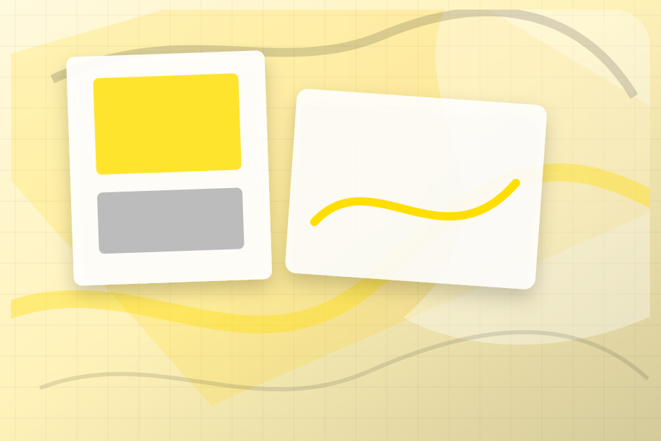
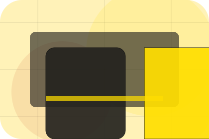
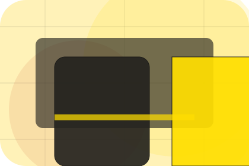
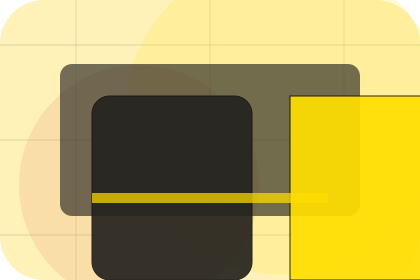
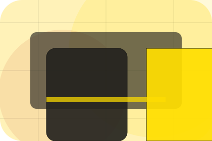

Context
Mood gives the page a specific angle instead of repeating the navigation label.
Fashion
Sunlit campaign lookbook for taste, status and movement.

Home / 02
Mood adds editorial context to the home route, using the sunlit campaign lookbook structure to support taste, status and movement before visitors choose a next step.
Linea uses sunny lookbook cards and focused copy to make the decision easier to scan, aligning the section with taste, status and movement rather than filling space.
Open Brand
Mood gives the page a specific angle instead of repeating the navigation label.

The sunny lookbook cards show what to compare, what to avoid, and what matters most for fashion, apparel & accessories visitors.
The final cue points to a useful internal route so the section keeps the journey moving.
Home / 03
Collection adds editorial context to the home route, using the sunlit campaign lookbook structure to support taste, status and movement before visitors choose a next step.
Linea uses sunny lookbook cards and focused copy to make the decision easier to scan, aligning the section with taste, status and movement rather than filling space.
Open ShopCollection gives the page a specific angle instead of repeating the navigation label.
The sunny lookbook cards show what to compare, what to avoid, and what matters most for fashion, apparel & accessories visitors.
The final cue points to a useful internal route so the section keeps the journey moving.
Home / 04
Promise defines the better state Linea is built to create, with enough detail to make the promise believable.
A fashion lookbook site with warm yellow, playful scale shifts, collection cards, and sizing routes. The section grounds that direction in concrete benefits, visible tradeoffs, and a next route visitors can use when the promise feels relevant.
Open LinesPromise defines what becomes clearer, easier, or safer when Linea is the chosen route.
The benefit is tied to taste, status and movement, not a vague quality claim.
Visitors get a linked path to compare the promise against services, standards, or examples.
Home / 05
Shop adds editorial context to the home route, using the sunlit campaign lookbook structure to support taste, status and movement before visitors choose a next step.
Linea uses sunny lookbook cards and focused copy to make the decision easier to scan, aligning the section with taste, status and movement rather than filling space.
Open LookbookShop gives the page a specific angle instead of repeating the navigation label.
The sunny lookbook cards show what to compare, what to avoid, and what matters most for fashion, apparel & accessories visitors.
The final cue points to a useful internal route so the section keeps the journey moving.
Home / 07
Craft adds editorial context to the home route, using the sunlit campaign lookbook structure to support taste, status and movement before visitors choose a next step.
Linea uses sunny lookbook cards and focused copy to make the decision easier to scan, aligning the section with taste, status and movement rather than filling space.
Open SizingCraft gives the page a specific angle instead of repeating the navigation label.

The sunny lookbook cards show what to compare, what to avoid, and what matters most for fashion, apparel & accessories visitors.

The final cue points to a useful internal route so the section keeps the journey moving.
Home / 08
Reviews converts customer proof into a useful buying signal: the problem, the experience, and what changed afterward.
Proof stays believable by focusing on situation, service experience, and practical change rather than vague praise or unsupported results.
Open JournalWhat the visitor needed before choosing Linea, written with enough context to feel real.

How the service, product, or support felt during the process, not just that it was good.

What became easier to decide, complete, buy, book, or trust after the interaction.
Home / 09
Questions handles buying doubts directly so visitors can understand timing, fit, limits, and the safest next step.
Answers are short by design: enough to remove hesitation, not so much that the page turns into documentation before the visitor can act.
Open ContactQuestions gives the page a specific angle instead of repeating the navigation label.
The sunny lookbook cards show what to compare, what to avoid, and what matters most for fashion, apparel & accessories visitors.

The final cue points to a useful internal route so the section keeps the journey moving.
Linea starts with a focused intake so the recommendation matches the visitor's context, risk, timing, and readiness.
Each route explains inclusions, exclusions, documents, timing, and the decision points that affect final delivery.
The theme uses sunlit campaign lookbook, sunny lookbook cards, and lookbook slider, size guide, collection filter rather than a shared template rhythm.
Oversized campaign hero
Select the closest route and Linea keeps the next step, proof, and follow-up expectation aligned with taste, status and movement.
Home / 10
Linea closes the home route with a clear action, a quick reminder of the value, and a low-friction way to shop the collection.
Visitors who are ready can use the primary action. Visitors who are still comparing can scan the section links, proof, and support routes before they shop the collection.
Shop CollectionThe final block keeps the choice simple: act now, compare one more proof route, or send enough detail for a focused response.
Shop Collectiontaste, status and movement
A fashion lookbook site with warm yellow, playful scale shifts, collection cards, and sizing routes. Home ends with a direct path to shop the collection, plus enough context for visitors who still need to compare.
 Shop Collection
Shop Collection